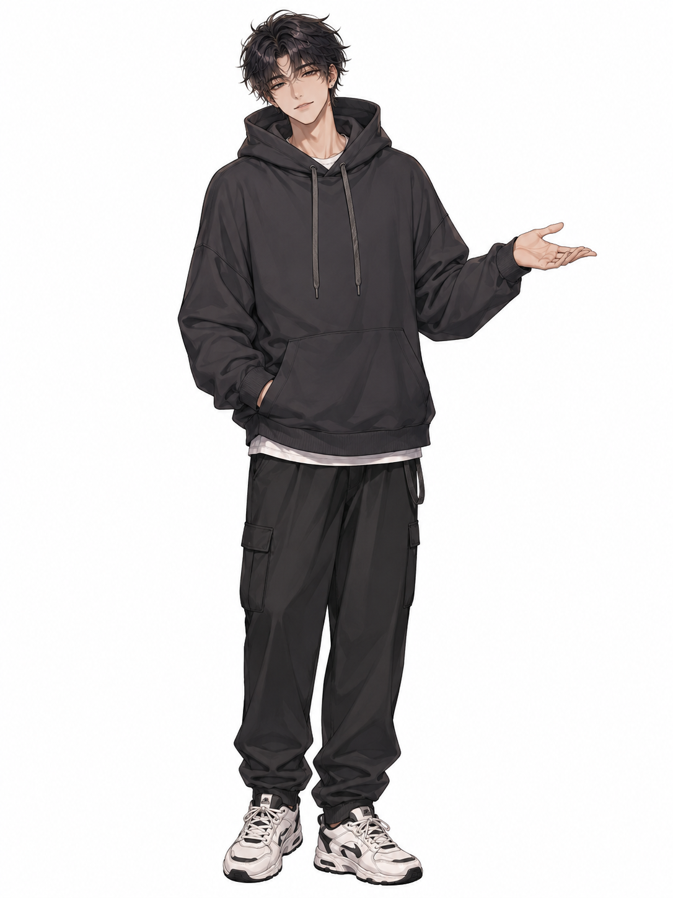

사이즈 선택
인생네컷처럼 원하는 출력 타입을 카드로 고른다.
나만의 네컷 제작소
먼저 네컷 사이즈를 고르고, 그 칸에 맞는 캐릭터 PNG를 만든 다음, 사진을 찍고 마지막에 배경을 고르면 돼. 업로드한 이미지는 서버에 저장되지 않고 브라우저 안에서만 처리돼.

GUIDE
인생네컷처럼 원하는 출력 타입을 카드로 고른다.
선택한 칸 크기에 맞춰 투명 PNG 캐릭터를 만든다.
1~4컷에 각각 캐릭터 PNG를 올린다. 사진 위에 고정된다.
카메라로 찍거나 컷별 사진을 업로드한다.
마지막에 배경색이나 배경 이미지를 고른다.
포토부스처럼 출력되는 모션 후 PNG로 저장한다.